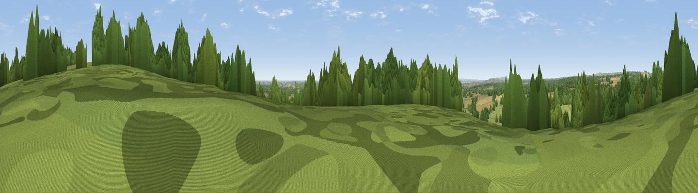

Viewpoint near Walderton
#29831 in England · top 57% of its area beats it · near WaldertonThe view, rendered

A 360° render of this exact spot computed from the terrain model, tree cover and land cover — summer colours, afternoon light, calibrated against photographs of famous viewpoints. Real trees, hedges and buildings will differ in detail.
The panorama
Grey silhouette: terrain skyline in each direction (720 bearings, Earth curvature and refraction included). Dashed green: skyline with trees (+15 m) and buildings (+8 m) as obstacles. Blue strip: how far the ground is visible on each bearing.
Where the view opens
Wedge length = distance to the farthest visible ground on that bearing (vegetation-aware). Rings at 10, 25 and 50 km.
What fills the view
35% grassland · 33% woodland · 26% cropland · 3% water · 3% built-up
Angular shares of the visible panorama (visual magnitude), not map area. Landscape diversity 0.57 (0–1 Shannon).
Key numbers
More beautiful places nearby
The staircase of upgrades: each row has a higher view potential than everything closer. Driving times are estimates from straight-line distance, calibrated against real road routing — check an actual route before setting out.
| Place | Direction | Drive | Score |
|---|---|---|---|
| Walderton Down | NE · 0 km | ~2 min | 62.6 |
| Viewpoint near Stoughton | E · 2 km | ~5 min | 66.3 |
| Viewpoint near Stoughton | ENE · 3 km | ~8 min | 75.1 |
| Viewpoint near Stoughton | ENE · 4 km | ~8 min | 79.5 |
| The Trundle | E · 9 km | ~17 min | 82.2 |
| Beacon Hill | N · 9 km | ~17 min | 85.8 |
| Chanctonbury Ring | E · 35 km | ~53 min | 87.0 |
| Viewpoint near St. Lawrence | SW · 41 km | ~60 min | 88.2 |
50.88205, -0.87590 · source: screening · position refined by local search. Computed location — check access rights before visiting.